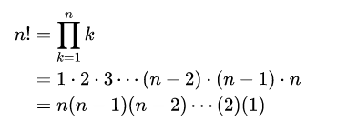

The Factorial Function
You may be familiar with the notation n!, pronounced "n factorial", the product of all of the positive integers less-than, or equal to n. In mathematical notation it is written like this.

Using a loop, we can implement the function in C++ like this:
int factorial(n)
{
int result = 1;
for (int i = 1; i <= n; ++i) { result *= i; }
return result;
}Algorithms that use loops like this are iterative. Let's see how to write the function recursively.
 This course content is offered under a
CC
Attribution Non-Commercial license. Content in this course
can be considered under this license unless otherwise noted.
This course content is offered under a
CC
Attribution Non-Commercial license. Content in this course
can be considered under this license unless otherwise noted.